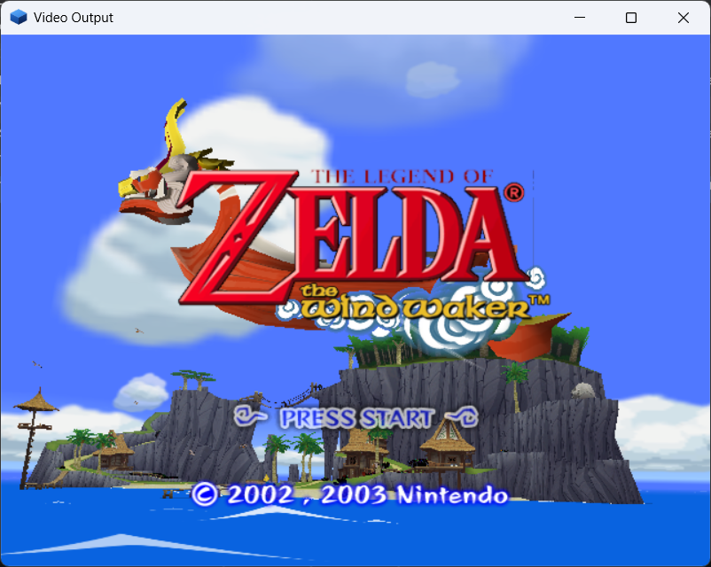
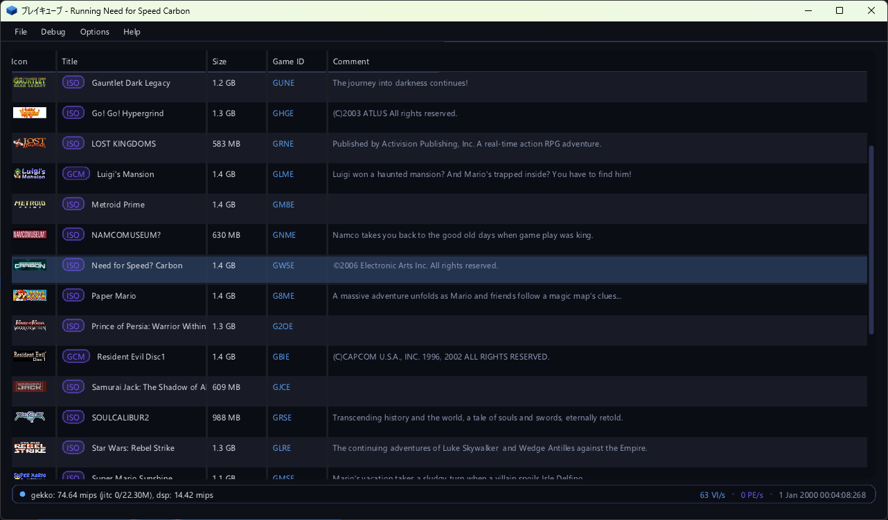

pureikyubu 2.0 — заметки о релизе
Версия 2.0 — это релиз периферии, обещанный в заметках к 1.9.1. Периферийные устройства консоли теперь одна подсистема: каждое устройство — контроллер, карта памяти, сетевой адаптер, Game Boy Player, Game Boy Advance на кабеле связи — это модель сама по себе, со своими настройками, своим местом в конфигурации и одним окном, которое их редактирует. Broadband Adapter и Modem Adapter эмулируются целиком со стороны консоли, Game Boy Player достигается через ту самую оконную область ARAM, в которой он и живёт, а карта памяти наконец-то монтируется. На стороне GameCube появляются сохранения состояния, а портативные машины сохраняют свои. Программный конвейер GFX перестал быть экспериментальным: он рисует заставку boot ROM и проигрыватели фильмов, а заголовки, которые он запускает, совпадают с шейдерным бэкендом. Интерфейс получает восемь тем, японские названия в селекторе, текст «один тексель на пиксель» при любом масштабе, окно видеовыхода, которое следует за своим окном, и строку состояния, сообщающую два такта эмуляции. Need for Speed: Carbon, с аварийного останова виртуальной машины которого началась эта работа, загружается.


На этой странице
Главное
- Один пул периферийных устройств. Эмуляция периферии раньше была там, где
оказывался её потребитель:
si.cppзнал байты ответов контроллера,padsdl.cppзнал и сторону SDL, и то, как опрашивается геймпад,memcard.cppсмешивал формат карты с жизненным циклом EXI, а настройки устройства хранил тот, кто этим устройством пользовался. Теперь периферия — это отдельное устройство (src/peripherals.cpp): модель, регистрируемая своим модулем (cont.cpp,memcard.cpp,gbplayer.cpp,gbalink.cpp,bba.cpp,mdm.cpp), порт шины SI, EXI или Hi-Speed, пул, который и есть списокDevicesконфигурации, и таблица свойств, которую окно настроек рисует по тому, что устройство о себе публикует. Сборка, не компилирующая модуль, просто не имеет таких устройств, а новая модель появляется в окне настроек без единой строки в интерфейсе. - Два сетевых адаптера. Broadband Adapter (DOL-015) и Modem Adapter (DOL-012)
делят последовательный порт 1 (канал 0 EXI, второй chip select) и
различаются по своему EXI device ID. Оба говорят на собственном протоколе консоли
«командное слово, затем данные» — EXI-прослойка перед обычным
Ethernet-контроллером, причём адрес идёт вперёд с каждым байтом, — и оба отвечают на
инициализацию, которую выполняет ethernet-библиотека SDK. Кадры Broadband Adapter проходят
через
BbaBackend, а поставляемый бэкенд отправляет их по UDP, так что два эмулятора играют в одном эмулируемом сегменте. Поддержка сетевых устройств всё ещё в стадии доработки: ни одна игра из SDK не говорит на IP, рукопожатие «запрос/ответ» и поле длины фрагмента — это модели, а при пустом peer адаптер превращается в консоль с вынутым кабелем. - Карта памяти монтируется. До того как игра могла воспользоваться картой,
было неверно пять вещей, и каждая была не видна, пока настоящая программа не попробует:
декодер команд стартовал не в покое, EXI device ID сдвигался не в тот байт, у «стирания
карты» не хватало двух завершающих байт, адрес за пределами ёмкости микросхемы отвергался
вместо заворачивания, а чтение начиналось заново с адреса команды при каждой передаче.
Вместе с разблокировкой карты (challenge) все шесть ёмкостей были
проверены от начала до конца — 4, 8, 16, 32, 64 и 128 Мбит — а
CARDFormat,CARDMountиCARDCheckвозвращают то же, что и железо. - Game Boy Player достигается там, где он действительно находится. Player не
появляется ни на EXI, ни на SI: он висит на контроллере ARAM (SDRAM), и
Start-up Disc общается с ним, занимая окно расширения по адресу
0x0100_0000и затем выполняя четырёхраундовое рукопожатие с дополнением, которое обычное окно памяти пройти не может.gbplayer.cppреализует окно, размер расширения вAMCR, 32-байтные командные каналы и бит 13 прерывания PI; и когда каналы удерживают записанное, диск перестаёт крутиться в цикле и доходит до***Creating GbpSystemObject. Поддержка GBA всё ещё в стадии доработки: прошивка самого Player не реализована, поток кадров не читается, а кабель связи говорит только на протоколе JOY — но не на передаче multi-boot, которая загружает программу внутрь Game Boy Advance. - Сохранения состояния. Сторона GameCube получает формат, который есть у
портативных машин с
src/gba/gba_savestate.*: вся машина в одном файле,F5записывает,F7читает текущий слот,Shift+F5/F7 переключают слот, те же пункты есть в меню File, а в отладочном интерфейсе —savestate,loadstateиstates. Состояние — это заголовок, контрольная сумма и по одной секции на подсистему, около 45 МБ (51 МБ с программным конвейером, который несёт в себе и EFB). Круговой прогон был проверен байт в байт, и вместе с ним — то свойство, которое важно: состояние, загруженное в машину, которая уже успела поработать, продолжает тот самый прогон, который не прерывался. - Программный конвейер GFX больше не экспериментальный. Он рисует
заставку boot ROM (картинку шириной 592 пикселя, которую VI забирает с
собственной шириной из
VI_PICTURE_CFGи горизонтальным масштабатором) и проигрыватели фильмов — титульный экран Wind Waker выше это его работа, — а прогон демок DolphinSDK совпадает с шейдерным бэкендом, который остаётся используемым по умолчанию. Картинку выпустила маска записи BP в CP (0xFE): теперь каждый bypass-регистр сливает маску в своё значение для самой следующей записи, и это не даёт библиотеке GX затирать общие полезные нагрузки регистров. - Дамп команд GFX.
gfxdumpзаписывает то, что CP отправляет в XF, хранит последние кадры в виде кольца и показывает поток тремя способами: декодированные команды, сырые слова в big-endian и срезы гостевой RAM тех текстур, которые кадр сэмплировал. Это отдельная вкладка отладчика (GFX Dump) и команда отладочного интерфейса. - У интерфейса появился собственный облик. Восемь тем, построенных на палитре сайта (тема по умолчанию «Flipper», шесть оттенков рядом с ней и «Daylight» для светлой), японские названия в селекторе, влитые в шрифт, текст, запечённый под масштаб дисплея, так что глиф попадает ровно в пиксель при любом масштабировании, окно видеовыхода, которое меняет размер и заголовок со своим бэкендом и частотой кадров, и строка состояния, которая сообщает два такта эмуляции: тайм-базу консоли и собственные часы хоста.
- Need for Speed: Carbon загружается. Его аварийный останов виртуальной машины был TLB, который не сбрасывался при страничном отказе DSI/ISI, и гость продолжал исполняться через устаревший пересчёт; теперь бит Changed в PTE выставляется через кэш трансляций так, как это делает железо.
Добавлено
Пул периферийных устройств
- Что такое устройство, в одном числе.
DeviceIDназывает модель:0x00010001— стандартный контроллер (DOL-003),0x00020001— карта памяти,0x00030001— Game Boy Player. Модуль регистрирует свои модели (Peripherals::RegisterFactory), так что сама подсистема не знает, что такое геймпад или карта; порт принадлежит шине (SI, EXI или HSP), и устройство можно включить только в разъём своей шины. Порты — это четыре канала SI, два слота карт, последовательный порт 1 и порт Hi-Speed. - Устройство публикует свои органы управления и свойства. Актуатор
— это один орган управления (
PAD_ACT_*для геймпада,GBP_ACT_*для Game Pak), привязка — то, что им управляет (клавиша клавиатуры и кнопка или ось хостового контроллера), а свойства — всё остальное, что устройство о себе показывает: флажок, строка только для чтения, файл, которым оно владеет (PERIPH_PROP_FILE), или файл, который оно только читает (PERIPH_PROP_ROM). Вид свойства выбирает редактор и браузер. - Сторона хоста — это бэкенд, а не часть устройства.
HostInputреализуют интерфейс (padsdl.cpp,padnull.cpp) и модульные тесты; через него мотор вибрации геймпада доходит до хостового контроллера. Устройство никогда не вызывает SDL, а интерфейс никогда не знает, что такое геймпад. - Пул — это список, а не таблица с дырами. Устройство держит свою
запись списка, поэтому изъятое устройство уносит с собой свои настройки, а следующие за
ним записи не перенумеровываются. Список — это и есть содержимое; в коде больше нет
запасного варианта для «слота, который конфигурация не упоминает». Настройки сборок до пула
(
controllers,memcardsи переменныеDevice3_Name) отбрасываются из документа при чтении настроек."peripherals": { "Devices": [ { "Type": 65537, "Name": "Controller 1", "Port": 0, "VKEY_FOR_A": 27, "GCKEY_FOR_A": 65536 }, { "Type": 131073, "Name": "Memory Card A", "File": "Data/card.mci" } ] } - Время жизни. Пул открывается вместе с эмулятором, а не с машиной — окно
настроек редактирует его и без загруженной игры, — и машина важна только тому устройству,
которое с ней говорит:
MachineOpenedставит карты в их слоты, аMachineClosedвынимает их и сбрасывает файлы, в которые они писали. Устройство никогда не уничтожается, пока эмулятор работает: изъятое отсоединяется, убирается из списка и остаётся живым до закрытия пула целиком. testing/peripherals_test.cppуправляет геймпадом так же, как это делает пользователь, и покрывает пул, шины, мотор, начала координат и то, что добавленное устройство остаётся на месте после перезапуска.
Два сетевых адаптера
- Транспорт. Оба адаптера ставят перед обычной микросхемой EXI-прослойку,
и выбор — это командное слово, за которым идут данные, от старшего байта к младшему, причём
адрес идёт вперёд с каждым байтом — именно так драйвер читает шесть байт MAC или пакет одним
пакетом:
Регистр прослойки — шесть бит, адрес контроллера — шестнадцать; файл регистров — это страница 0, а память пакетов — страницы выше. Устройству сообщают, какая передача начинает последовательность (флагдоступ командное слово затем чтение контроллера четыре байта: 0x8000и адрес в битах 15:8чтение nбайтзапись контроллера четыре байта: 0xC000и адресзапись nбайтчтение прослойки два байта: reg << 8чтение nбайтзапись прослойки два байта: 0x4000 | reg << 8запись nбайтfirstImmканала), потому что двухбайтная запись может быть и командой, и байтом данных. - Broadband Adapter (DOL-015). Файл регистров контроллера, его
идентификация, MAC-адрес и кольца приёма/передачи эмулируются; сеть за ним — это
BbaBackend, который устанавливает интерфейс.bbaudp.cppотправляет кадры по UDP: страница «GCN Hardware» называет второй конец (BBA_PEER,host:port) и порт, который слушает этот эмулятор (BBA_PORT). Пустой peer — это значение по умолчанию и означает «сети нет»: тогда адаптер идентифицирует себя, сообщает, что линия не поднята, и ни один кадр не приходит. - Modem Adapter (DOL-012). Тот же протокол «команда, затем данные», но с
шестибитным номером регистра на своей странице:
0x01— статус, который опрашивает драйвер,0x0D— статус ошибки,0x12— сырой статус, а0x06/0x07,0x0E/0x0F,0x10/0x11— пары делителя и порога. Файл регистров, идентификация, команды подтверждения и интерфейс AT эмулируются; телефонная линия — нет: команды настройки получают ответOK, а на дозвон отвечаетNO DIALTONE. - Командное слово определяется по установке сигнала, а не по изменению. Флаг, отмечающий первую передачу после chip select, раньше выставлялся только когда выбранное устройство менялось, а драйвер, получивший шину с уже выбранным разъёмом, начинает последовательность выбором, который ничего не меняет, — и его командное слово принималось за данные. Теперь флаг выставляется любой записью, которая устанавливает выбор, как это и делает железо; три прогона из трёх драйвера-повторителя модема читают идентификацию обратно.
- Как оба проверяются без игры. Ни одна демка SDK не говорит на IP, поэтому
проверяется та половина драйвера, которая живёт на стороне консоли, — инициализация, которую
выполняет ethernet-библиотека до того, как двинется хоть один пакет
(
bbadrv.py/mdmdrv.pyзагружают эту последовательность в запущенную демку). Оба адаптера отвечают на неё, и отвечают по-разному:Что читает драйвер Broadband Adapter Modem Adapter тип устройства EXI 0x040202000x02020000id контроллера по 0x444D 58("MX")0x00020000пакет MAC MAC ( 00 09 BF 00 00 01)собственный id адаптера состояние линии по 0x310300MISC2 ( 0x50): запись0x80, чтение8000ревизия прослойки: запись 0xD107, чтениеD1D1пакет challenge 5A 5A A5 A500 00 00 00
Game Boy Player и кабель связи
- Player — это расширение ARAM, а не устройство на шине.
AMCRнесёт и внутренний размер, и размер расширения; драйвер занимает самое большое окно (0x0063), зондирует его четырёхраундовым рукопожатием, требующим, чтобы байт 1 ответа был дополнением записанного байта, и останавливается на 16 МБ (0x005B). База окна — это размер внутренней ARAM, поэтому весь трафик Player идёт по ARAM0x0100_0000и выше, и это окно регистров и почтовых ящиков, а не памяти. - Каналы удерживают записанное. Командная процедура консоли — это
«чтение-изменение-запись»: она читает байт, сбрасывает подтверждаемые биты, выставляет биты
отправляемой команды и записывает результат обратно. Устройство, отвечающее константой,
подтвердить невозможно, и диск тратил 20-секундный прогон на ~107 000 чтений
+0x400000и ~53 000 чтений+0xD00000. Когда каналы удерживают записанное, а прерывание поднимается только при смене состояния устройством, тот же прогон делает 526 и 3 чтения, и диск спокойно продолжает инициализацию. - Что диск делает теперь. Доведя порт до этой точки, Start-up Disc печатает
***Creating GbpSystemObject,***Allocating GbpSystemObject,***Creating Display objectиGBAPadInit : ClientImageSize = 19464— инициализация порта прошла точку, на которой раньше застревала. - Game Pak — это свойство устройства. Файл картриджа хранится в собственной записи Player в пуле («GamePak»), окно настроек рисует строку «Game Pak» с браузером файлов, и у устройства есть также строка «BIOS». Переключатель «Run Game Pak» решает, стоит ли машина внутри Player вообще чего-нибудь: работающий Game Pak стоит примерно столько же хостового времени, сколько и консоль, к которой он подключён.
- Как увидеть работу Game Pak. Сессия GameCube не публикует собственный
отладочный интерфейс GBA, поэтому устройство публикует команду
gbpshot <file.png>: ЖК-экран 240x160 машины в Player (или машины на кабеле связи) записывается в файл, а в ответе идут имя устройства, размер и счётчик кадров машины. - Кабель связи (
gbalink.cpp) — это та же машина за набором команд JOY (DOL-011), и она работает только тогда, когда ей есть что делать: Game Pak в слоте или консоль, ведущая порт как связь, — второй случай и нужен multi-boot, потому что игра, стримящая свою программу в память партнёра, делает это при пустом слоте. Устройство один раз сообщает об этом в журнале:GBA Link: the console drives the port as a link (command 15). Оно не говорит на передаче, загружающей программу внутрь Game Boy Advance.
Сохранения состояния
- Клавиши и меню.
F5записывает состояние текущего слота,F7читает его обратно;Shift+F5/F7 переключают слот (0..9, по кругу, видно в строке состояния). В меню File есть Quick Save/Load State, подменю на каждый слот с отмеченным текущим и Next/Previous State Slot. - Команды.
savestate [slot],loadstate [slot]иstates, каждая отвечает Markdown рядом с полями, которые может использовать клиент (file,slot,result,error/size). На время сохранения или загрузки машина останавливается и затем запускается так, как была. - Файлы. Состояние живёт рядом с образом и называется по его имени:
Data/game.isoдаётData/game.st0...st9,pong.dolдаётpong.st0.., boot ROM даётBootrom.st0... - Формат. Заголовок (магия
PSAVEST, версия формата, размер полезной нагрузки и её контрольная сумма FNV-1a 64), а затем по одной секции на подсистему:META,FLPR,CPU,MEM,PI,VI,AI,DI,SI,EXI,CP,DSP,DVD,GX,PE,XF,SU,RAS,TEV,TX,BPиHLE. Секция — это тег, длина и байты; читатель проходит их по порядку и перешагивает через неизвестный тег, а каждая секция должна быть прочитана ровно до конца. - Чего состояние не несёт, и у каждого своя причина: образ диска, исполняемые файлы, boot ROM и ПЗУ DSP; карты памяти и остальной пул; сэмплы, уже отданные звуковому устройству; EFB шейдерного конвейера; объекты GL, окно и хостовые потоки; скомпилированные блоки JIT; точки останова отладчика; и кэши (сбрасываются в память и отбрасываются, кроме заблокированного L1 кэша данных, который является scratch-pad памятью и путешествует в состоянии).
- Состояние, которое здесь не подходит, отвергается по имени — это не состояние, неизвестная версия формата, несовпавшая контрольная сумма, другая игра, другой объём памяти, другая раскладка секций сборки, состояние другой машины или пустой слот.
- Проверки, из которых это написано. Headless-сборка, управляемая через
транспорт MCP, записала состояние, прочитала его обратно и записала снова — байт в байт
одинаково, на
pong.dolи на boot ROM с работающим программным конвейером. Машина, прошагавшая 20 000 инструкций после загрузки состояния, даёт те же байты, что и машина, которая не останавливалась, и то же самое верно, когда состояние загружается в машину, пять секунд работавшую свободно. Тесты нашли две настоящие асимметрии и одну проблему с кэшами, прежде чем пройти. - Портативные машины сохраняют свои. Обе машины, GBA и Game Boy, пишут и
читают состояние по
F3/F4иShift+F3/F4 (слот виден в заголовке окна),.savкартриджа по-прежнемуF5, а в отладочном интерфейсе естьgbasavestate/gbaloadstate/gbastatesиgbsavestate/gbloadstate/gbstatesдля Game Boy. Состояние несёт личность картриджа и отвергается машиной с другим картриджем — или другой машиной целиком.
Дамп команд GFX
src/gfxdump.cppзаписывает графический поток с того места, где начинается XF (собственное состояние VCD/VAT в CP в него не входит), в виде четырёх видов записей: загрузка блока регистров XF, чтение регистра XF, слово bypass-регистра вместе с предшествовавшей ему маской записи BP и команда рисования со строками вершин, которые за ней последовали.- Дамп делится на кадры счётчиком кадров и хранится кольцом
(
GfxDump::MaxFrames); кадр, превысивший лимит байт, обрезается и помечается как усечённый. Поток — это самоописывающаяся последовательность 32-битных слов в big-endian, поэтому сохранённый файл не зависит ни от порядка слов на хосте, ни от раскладки структур. - Срезы RAM делают дамп самодостаточным. Рисование сэмплирует текстуру (а для палитровой — и TLUT), запрограммированную задолго до него, и гость перезаписывает эту текстуру в следующем кадре; блок текстур отдаёт каждое такое чтение дампу, и байты копируются в тот кадр, которому они были нужны.
- Команды:
gfxdump [frames],gfxdump commands [id],gfxdump hex [id],gfxdump capture [on|off|toggle],gfxdump select <id>,gfxdump clearиgfxdump save [id]. У отладчика есть вкладка GFX Dump рядом со всем отладчиком, с вкладкой на каждый ответ («Frames», «Commands», «Hex»), кнопкой захвата и построчным листингом кадра, где печатается каждое поле. - CP теперь обрабатывает и bypass-команду
0x69, одну из тех, что может нести bypass-поток.
Интерфейс
- Восемь тем. Облик — это отдельный модуль (
uitheme.cpp): палитра из десяти цветов, превращаемая в стиль ImGui, где состояния наведения и нажатия выводятся из состояния покоя. Тема по умолчанию, «Flipper», — это тёмная тушь сайта проекта с синим цветом куба из его логотипа для всего выбранного и фиолетовым цветом затенённой грани как вторым акцентом; шесть тем рядом — оттенки того же рецепта (Nebula, Emerald, Crimson, Amber, Graphite, Sakura), а «Daylight» — тот же рецепт на светлом фоне. Тема выбирается в Options → Settings… → Interface, показывается до применения и хранится вui.THEME. - Знак интерфейса. Куб pureikyubu из логотипа проекта рисуется по палитре
(
UiThemeDrawCube), так что интерфейс отмечен проектом, а не только окрашен под него. - Японские названия. Колонки Title и Comment в селекторе были пустыми для любого японского диска, потому что ни встроенный шрифт ImGui, ни пропорциональные шрифты систем не содержат каны или кандзи. Японский вливается в шрифт интерфейса из CJK-шрифта, который есть в системе (Meiryo, Yu Gothic, MS Gothic, BIZ UDGothic и Arial Unicode в Windows; Noto CJK, VL Gothic, IPA, Takao и Droid Sans Fallback в Linux), по 2999 иероглифам наборов Joyo и Jinmeiyo; система без такого шрифта показывает названия так, как показывала раньше.
- Резкий текст при любом масштабе. Атлас шрифтов запекается под собственный масштаб дисплея (1.0, 1.25, 1.5), пока интерфейс продолжает раскладываться в логическом масштабе, так что глиф попадает во фреймбуфер один тексель на пиксель, а не растягивается рендерером из текстуры меньшего размера.
- Окно видеовыхода (задача #458). Теперь его можно растягивать и разворачивать: оба презентера масштабируют картинку в наибольший прямоугольник окна той же формы, по центру, а полосы вокруг заливают чёрным — развёрнутое окно 16:9 больше не превращает кубы игры в кирпичи. Программный бэкенд масштабирует на CPU, пиксель за пикселем; GL-бэкенд блитит с линейной фильтрацией и очищает полосы полной маской цвета. Программный путь раньше вообще переставая обновляться при изменении размера, потому что SDL выбрасывает поверхность окна, а её больше не запрашивали.
- Заголовки окон и такты (задача #458). Окно видеовыхода сообщает, какой
бэкенд рисует картинку и сколько кадров в секунду выдаёт эмулятор
(
Video Output | shader | 59.9 fps); главное окно сохраняет просто имя того, что запущено. Кадр считает ровно один из двух. Строка состояния показывает эмулируемую производительность Gekko и DSP и два такта эмуляции, измеренные от момента загрузки образа: тайм-базу консоли (TBR 5m 09s) и собственные часы хоста (wall 1h 02m 03s). Эмулируемые часы — это новая командаOSSeconds, потому чтоOSTime/OSDateTimeсбрасывают часы на 24. - Окно настроек (и отдельные настройки GBA). Все настройки эмулятора — в
одном окне с полосой вкладок слева (General — селектор игр, GCN Hardware, Controllers, Memory
Cards, Network, High-Speed Port и Interface) и таблицей свойств справа. Портативная машина
настраивается в отдельном окне, Options → Stand-alone GBA…
(
uisettingsgba.cpp), которое редактирует файл машины и её одиннадцать привязок; клавиши по умолчанию следуют железу, где A стоит справа от B (A— этоX,B— этоZ). - Меню селектора отключается и затеняется с указанием причины, пока идёт эмуляция, так что
случайная клавиша или щелчок больше не загрузят другой образ поверх работающего.
Hardware → Graphics backend выбирает шейдерный или программный конвейер (тот
же переключатель, что и
gxpipeline), а Debug → HW Profiler Overlay включает оверлей профайлера, который теперь следует за картинкой в тот прямоугольник, который картинка заняла в окне.
Изменено
Карта памяти, пересмотренная
- Декодер команд должен стартовать в покое (
0xFF). Устройство запускалось с обнулённым полем, читало каждый байт своей первой записи как лишний, никогда не декодировало команду и ничего не отвечало — а библиотека консоли видит это как «в слоте нет карты». ТеперьMCConnectпаркует декодер. - EXI device ID — это не id карты. 32-битный тип
(
EXI_MEMORY_CARD_59=0x00000004и так далее) читается четырёхбайтной immediate-передачей, от старшего байта к младшему, поэтому код ёмкости живёт в младшем байте; модуль сдвигал его в старший байт. Двухбайтный id карты и однобайтный статус действительно сдвинуты, и именно это скрывало ошибку. - «Стереть карту» — это три байта (
0xF4 0x00 0x00). В таблице у неё не было завершающих байт, поэтому два нуля отвергались как лишние — а отказ использовалHalt, который поднимал отчёт интерфейса при каждой повторной попытке и стоил примерно 80x на демке, которая это делает. - Карта заворачивает свои адреса. Микросхема флеш-памяти меньше адреса, который её контроллер может выставить на шину, поэтому передача по адресу, которого у неё нет, — это те же байты, что и по завёрнутому адресу. Библиотека читает по адресам, которые существуют только на больших микросхемах, пока опознаёт карту. Теперь чтения, записи и стирание секторов заворачиваются.
- Чтение — это поток с внутреннего адреса. Четыре байта смещения в чтении — это место, где блок начинается, и каждая передача продолжается с того места, где остановилась предыдущая; счётчик сбрасывает только новое командное слово. Модуль перечитывал адрес команды при каждой передаче, поэтому монтирование в библиотеке читало первые четыре байта карты девять раз.
- Разблокировка (challenge). Оригинальная карта не отдаёт свой код кому
угодно: библиотека прячет запрос в свободных полях команды чтения (20-битное значение и
длина 4..32 от генератора, засеянного счётчиком тиков), вычисляет ответ бит-последовательным
шагом смешивания, читает код карты, проводя ответ между словами, и требует бит 6 байта
статуса.
memcard.cppреализует весь обмен; четыре детали, которые заставляют его работать: код читается из контроллера, а не из флеша, бит0x40выставляется только запросом, запрос — это immediate-передача и никогда чтение страницы, и запрос может быть ровно четыре байта длиной.
Окно настроек — одно окно
- Диалоги, которые заменил пул, — Options → Controllers → Port n, Options → Memcards → Slot A и настройки, у которых диалога не было вовсе, — убраны из меню, в котором теперь один пункт Options → Settings….
- Страница следует за устройством, а не за шиной, на которой оно висит. Карты и оба сетевых адаптера — все они EXI-устройства пула, поэтому страница, бравшая устройства с шины, показывала адаптеры в разделе «Memory Cards».
- Настройка вступает в силу по мере редактирования (привязка используется следующим опросом, файл карты открывается сразу), и пул сам записывает устройство, так что у окна нет ни OK, ни Cancel.
Программный конвейер
- Заставка boot ROM рисуется. Число активных строк берётся из
VI_VERT_TIMING, а геометрия строки — изVI_PICTURE_CFG: полеWPL— это ширина картинки в 16-пиксельных словах, а полеSTD— шаг, с которым забираются строки поля. Заставка шириной 592 пикселя (37 слов, 1184 байта на строку), и картинка выходила перекошенной, пока развёртка предполагала 640 пикселей цели рендеринга. ЗатемVI_HSCALEрешает, растягивает ли горизонтальный масштабатор картинку на всю строку (boot ROM это включает) или оставляет её один пиксель к одному. - Проигрыватели фильмов работают. Программный конвейер рисует вывод проигрывателей фильмов, и именно это вывело титульный экран Wind Waker на экран выше.
- Маска записи BP (
0xFE) ограничивает, какие биты самой следующей записи BP-регистра обновляются, а затем сбрасывается сама. Теперь её уважает каждый bypass-регистр, и CP передаёт её вниз по bypass-цепочке вместе с записью. Без неё запись режима смешивания библиотеки уносила биты обновления цвета и альфы вCMODE0, и всё нарисованное после неё не писало цвет вообще — чёрное небо The Wind Waker. - Программный EFB очищается первым примитивом своего кадра, что и нужно кадру, начинающемуся с полноэкранного примитива. Побочный эффект той же работы: bypass-регистр, уважающий маску записи, больше не затирает биты, принадлежащие другой возможности.
Gekko, командный процессор и последовательный интерфейс
- Сброс TLB при страничном отказе. Инструкции управления кэшем, заполняющие TLB, могут оставить устаревший пересчёт, и гость продолжал исполняться через него после страничного отказа DSI/ISI — аварийный останов Need for Speed: Carbon. Теперь TLB сбрасывается при таком отказе.
- Бит Changed в PTE выставляется через кэш трансляций, как это делает железо. Раньше бит записывался только при заполнении записи TLB, поэтому страница, записанная через кэшированный пересчёт, никогда не сообщала, что была изменена.
WPAR[BNE]сообщается только когда занята половина буфера сбора записи, — это то условие, при котором его сообщает железо (эксперимент, который теперь измеряют бенчмарки).- CP обрабатывает bypass-команду
0x69. - Задача #416: детерминированное пошаговое исполнение. Команда
step, путь IPL «нет диска» (--no-disc) и отчёт о XFB дисплея стали детерминированными и повторяемыми, так что прогон можно остановить на точной инструкции и сравнить. - Последовательный интерфейс отвечает на COM-передачу в пустой разъём так,
как это делает железо, и защёлкивает
NOREP— канал, ответивший на коммуникационную передачу отсутствием ответа, должен продолжать это говорить.
Портативное ядро
- Припаркованный DMA сохраняет своё место в повторяемом блоке. GBATEK
перезагружает
CNT_Lи, возможно,DADпри повторе, но неSAD, поэтому указатель источника продолжает идти; звуковой DMA всегда повторяющийся, а старый код начинал поток с того же адреса при каждом заполнении FIFO. - Байтовая запись в
DISPSTATсохраняет половину, к которой не обращается, — именно этого ждёт игра, записывающая один байт регистра. - Настройки GBA получают собственное окно, у кнопок строки BIOS появляется место, а файл становится пользовательским, а не поставляемым.
- Два устройства Game Boy делят органы управления и настройки и различаются только тем, по какой шине консоль до них добирается.
Исправлено
- Чёрное небо титульного экрана The Legend of Zelda: The Wind Waker — маска записи BP в CP (см. «Изменено»), из-за которой темнела картинка заголовка, начинающегося с записи режима смешивания.
- Need for Speed: Carbon — устаревший пересчёт TLB после страничного отказа DSI/ISI и бит Changed в PTE (см. «Изменено»). Заголовок загружается и работает.
- Карта памяти не могла смонтироваться — пять отдельных дефектов (см. «Изменено»), каждый из которых заставлял собственную библиотеку карт консоли отвергать карту.
- Список JSON заменяется целиком, а не сливается элемент за элементом; у элементов списка нет имён, поэтому слияние могло идти только по позиции и складывало все записи файла в первую. Ошибка стала достижимой, как только пул стал списком.
- Байт статуса Game Boy Player не возвращался на своём пути по умолчанию, поэтому каждое чтение статуса, которое делал Start-up Disc, было тем, что случайно лежало в регистре возврата; теперь весь блок статуса определён.
- Движок ARAM DMA логировал каждый перемещаемый блок, безусловно. Диск
Player, опрашивающий своё окно, перемещает десятки тысяч блоков в секунду, и каждый из них
стоил двух строк текста; теперь блок уважает настройку
AR_LOG, по умолчанию выключенную. Одно это изменение стоит примерно 4x на прогоне Start-up Disc. - Счётчик кадров дампа GFX и счётчик представленных кадров блока копирования закреплены тестами: копирование текстуры и частичное копирование дисплея не считаются, полноэкранное копирование дисплея — считается.
Известные проблемы
- Поддержка сетевых устройств всё ещё в стадии доработки. Собственная
половина адаптера эмулируется (транспорт, регистры, идентификация, MAC и кольца), но
сеть за ним — это бэкенд, и ни одна игра SDK не говорит на IP: ARP, IP и
сокеты, которые строит на них библиотека SDK, не проверены. Рукопожатие «запрос/ответ» и поле
длины фрагмента дескриптора принятого пакета — это модели, а не реконструкции,
и в исходниках это отмечено. Телефонная линия Modem Adapter не эмулируется:
команды настройки получают ответ
OK, а на дозвон отвечаетNO DIALTONE— код результата, который сообщает модем с пустым разъёмом. При пустомBBA_PEERадаптер — это консоль с вынутым кабелем. - Поддержка GBA всё ещё в стадии доработки. Прошивка самого Game Boy Player не реализована: окно порта, рукопожатие, каналы и прерывание на месте, и Start-up Disc прошёл свою инициализацию, но на каждую команду консоли отвечает прошивка Player, а её ничто не реализует, поэтому поток кадров не читается и буфер кадра, который сканирует VI, остаётся пустым. Кабель связи говорит только на протоколе JOY, на котором Game Pak работает из своего картриджа; он не говорит на передаче multi-boot, загружающей программу внутрь Game Boy Advance, — а именно она нужна собственному клиентскому образу Start-up Disc размером 19 464 байта. Game Pak, работающий внутри Player или link-устройства, к тому же не входит в состояние GameCube: состояние, загруженное с идущей игрой Game Boy, возобновляется с этой машиной на её сбросе.
- У портативных машин остаются проблемы 1.9.1. Картинка Game Boy Color
по-прежнему в работе (строка составляется сразу, а не точка за точкой); бюджет циклов OBJ на
строку и бит 5
DISPCNTу GBA не моделируются, а цикл конкуренции за видеопамять отсутствует; выходной каскад звука (SOUNDBIAS, амплитуда ШИМ) не моделируется; реверберация звукового драйвера HLE не моделируется; картридж ресурсных испытаний Nintendo не полностью зелёный (оставшиеся проверки — в области waitstate/prefetch); а перемотка (прогон машины назад через кольцо состояний) не реализована. - Сохранения состояния. Модульного теста для стороны GameCube пока нет — она проверялась headless-сборкой через транспорт MCP, а портативный стенд покрывает состояния GBA и Game Boy. EFB шейдерного конвейера не путешествует, поэтому состояние машины с шейдерным конвейером возобновляется тем, что заголовок нарисует дальше; скомпилированные блоки JIT отбрасываются; а состояние, упавшее на середине, оставляет машину наполовину загруженной. Ничего не сжимается: состояние — это около 45 МБ.
- Программный конвейер по-прежнему не делает построчный bump-texgen
«emboss», анизотропную фильтрацию и уточнения
diag_lod/lodclamp, режимы компенсации движенияround/field_predict, 16-битные форматы цвета R5G6B5 и Z сглаженного EFB, коэффициентыPE_COPY_VFILTER, режимы копирования YUV/4:2:0, оконный доступ CPU к EFB (Cpu2Efb) и поведениеPE_CHICKENревизии B. Шейдерный бэкенд остаётся по умолчанию, и заголовок, которому нужно что-то из этого списка, — причина вернуться к нему. - Дамп хранит последние кадры потока, а не всю сессию, и кадр за пределами лимита байт усечён; чтение текстуры, которое блок текстур не выполняет, в кадр не попадает.
- В сборке Linux по-прежнему нет звука и ввода для стороны GameCube, а у headless-цели Linux
нет закадрового бэкенда OpenGL (у Visual Studio он есть). Тесты
Settings, сравнивающиеbuild/Data/GBASettings.jsonс настройками по умолчанию байт в байт, требуют, чтобы у этого файла были окончания строк LF. - Собственный набор модульных тестов эмулятора — 531 тест с тремя падениями
(
Pe_ZWriteMaskControlsTheDepthUpdate,Pe_ZFreezeDisablesTheDepthWritesиReport_TevFog), и те же три падают на сборке, сделанной до этой работы, — это собственные проблемы стенда, и два теста глубины проходят, когда их запускают отдельно.
Что дальше
Периферия не закончена, и следующий релиз — это тот, где она будет закончена. Двум сетевым адаптерам нужна верхняя половина стека (игра, говорящая на IP, или мост на стороне хоста), Game Boy Player нужна прошивка самого Player — набор команд, видео- и аудиоформат потока кадров, — а кабелю связи нужна передача multi-boot. Game Boy Advance, которым владеет Player или link-устройство, тоже должен путешествовать в состоянии GameCube — это и закрыло бы единственную дыру в формате состояния, которая является состоянием машины, а не настройками.
После этого проект переходит в своё устойчивое состояние: планомерное, методичное улучшение — работа над производительностью и исправление ошибок релиз за релизом, а не очередной рывок возможностей. Архитектура на месте; осталось сделать то, что есть, быстрее, точнее и полнее.
Сборка
Windows. Откройте scripts/VS2026/pureikyubu.sln в Visual Studio
2026 и нажмите Build. Эмулятор — это интерфейс SDL2 в любой конфигурации, решение содержит
pureikyubu, SDL2 (статическая библиотека) и портативные цели,
собираются и x64, и x86 (Win32), рекомпиляторы следуют за хостом, а проекты нацелены на
Windows 7. Цель pureikyubu_headless входит в решение, но не собирается через
«Build Solution». EMU_VERSION — 2.0, и именно это сообщают
заголовок главного окна, окно About, JDI GetVersion и рукопожатие MCP.
Linux.
sudo apt install libglew-dev libsdl2-dev
git clone https://github.com/emu-russia/pureikyubu.git
cd pureikyubu
git submodule update --init
cd build && cmake .. && make
./pureikyubu pong.dol
cmake -DHEADLESS=ON .. && make # цель без окнаТесты.
MSBuild scripts/VS2026/pureikyubu_test.slnx -p:Configuration=Release -p:Platform=x64
vstest.console.exe scripts/VS2026/x64/Release/pureikyubu_test.dll /Platform:x64У портативных машин собственный стенд — 380 из 380 тестов проходят:
testing/gba_bench/check.sh
testing/gba_bench/get_test_roms.sh # публичные тестовые ROM и две картинки Acid2Предыдущие релизы по-прежнему доступны: Заметки о релизе 1.9.1 · Release Notes 1.9.1 · Заметки о релизе 1.9 · Заметки о релизе 1.8 · Заметки о релизе 1.7 · Markdown. Долгая история работы после релиза 1.6 — в дайджесте.